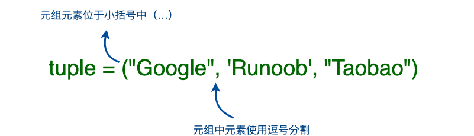
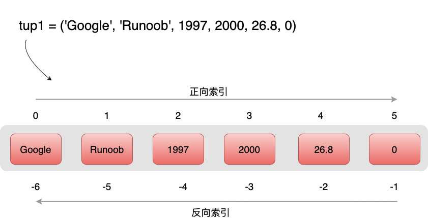
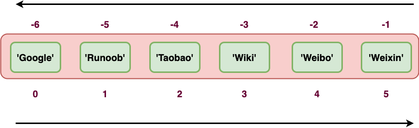

Python3 Tuple
Python tuples are similar to lists, except that the elements of a tuple cannot be modified.
Tuples use parentheses( ), lists use square brackets[ ]。
Creating a tuple is simple: just add elements in parentheses, separated by commas.

Example (Python 3.0+)
>>> tup2 = (1, 2, 3, 4, 5 )
>>> tup3 = "a", "b", "c", "d" # Parentheses are not needed either
>>> type(tup3)
<class 'tuple'>
Create an empty tuple
tup1 = ()
When a tuple contains only one element, you need to add a comma after the element,, otherwise the parentheses will be treated as an operator:
Example (Python 3.0+)
>>> type(tup1) # Without a comma, the type is integer
<class 'int'>
>>> tup1 = (50,)
>>> type(tup1) # With a comma, the type is tuple
<class 'tuple'>
Tuples are similar to strings in that indexing starts from 0, and they can be sliced, combined, etc.

Accessing Tuples
Tuples can use index numbers to access values in the tuple, as in the following example:
Example (Python 3.0+)
The output of the above example is:
tup1[0]: Google tup2[1:5]: (2, 3, 4, 5)
Modifying Tuples
The element values in a tuple are not allowed to be modified, but we can concatenate and combine tuples, as in the following example:
Example (Python 3.0+)
The output of the above example is:
(12, 34.56, 'abc', 'xyz')
Deleting Tuples
The element values in a tuple are not allowed to be deleted, but we can use the del statement to delete the entire tuple, as in the following example:
Example (Python 3.0+)
After the tuple in the above example is deleted, outputting the variable will cause an exception message. The output is as follows:
删除后的元组 tup :
Traceback (most recent call last):
File "test.py", line 8, in <module>
print (tup)
NameError: name 'tup' is not defined
Tuple Operators
Like strings, tuples can use the+、+=和 *+ sign for operations. This means they can be combined and copied, and a new tuple will be generated after the operation.
| Python Expression | Result | Description |
|---|---|---|
len((1, 2, 3)) | 3 | Count the number of elements |
>>> a = (1, 2, 3) >>> b = (4, 5, 6) >>> c = a+b >>> c (1, 2, 3, 4, 5, 6) | (1, 2, 3, 4, 5, 6) | Concatenation; c is a new tuple containing all elements from a and b. |
>>> a = (1, 2, 3) >>> b = (4, 5, 6) >>> a += b >>> a (1, 2, 3, 4, 5, 6) | (1, 2, 3, 4, 5, 6) | Concatenation; a becomes a new tuple containing all elements from a and b. |
('Hi!',) * 4
| ('Hi!', 'Hi!', 'Hi!', 'Hi!') | Replication |
3 in (1, 2, 3) | True | Whether an element exists |
for x in (1, 2, 3):
print (x, end=" ") | 1 2 3 | Iteration |
Tuple Indexing and Slicing
Because a tuple is also a sequence, we can access elements at specified positions in the tuple, and also slice a range of elements from indices, as shown below:
Tuple:
tup = ('Google', 'Runoob', 'Taobao', 'Wiki', 'Weibo','Weixin')

| Python Expression | Result | Description |
|---|---|---|
| tup[1] | 'Runoob' | Read the second element |
| tup[-2] | 'Weibo' | Read in reverse; read the second-to-last element |
| tup[1:] | ('Runoob', 'Taobao', 'Wiki', 'Weibo', 'Weixin') | Slicing: all elements starting from the second element |
| tup[1:4] | ('Runoob', 'Taobao', 'Wiki') | Slicing: from the second element to the fourth element (index 3) |
A running example is as follows:
Example
>>> tup[1]
'Runoob'
>>> tup[-2]
'Weibo'
>>> tup[1:]
('Runoob', 'Taobao', 'Wiki', 'Weibo', 'Weixin')
>>> tup[1:4]
('Runoob', 'Taobao', 'Wiki')
>>>
Tuple Built-in Functions
Python tuples include the following built-in functions
| Serial number | Method and description | Example |
|---|---|---|
| 1 | len(tuple) Count the number of elements in a tuple. |
>>> tuple1 = ('Google', 'Runoob', 'Taobao')
>>> len(tuple1)
3
>>>
|
| 2 | max(tuple) Return the maximum value of elements in a tuple. |
>>> tuple2 = ('5', '4', '8')
>>> max(tuple2)
'8'
>>>
|
| 3 | min(tuple) Return the minimum value of elements in a tuple. |
>>> tuple2 = ('5', '4', '8')
>>> min(tuple2)
'4'
>>>
|
| 4 | tuple(iterable) Convert an iterable series into a tuple. |
>>> list1= ['Google', 'Taobao', 'Runoob', 'Baidu']
>>> tuple1=tuple(list1)
>>> tuple1
('Google', 'Taobao', 'Runoob', 'Baidu')
|
About Tuples Being Immutable
The so-called immutability of a tuple means that the content in memory pointed to by the tuple is immutable.
>>> tup[0] = 'g' # Modifying elements is not supported
Traceback (most recent call last):
File "<stdin>", line 1, in <module>
TypeError: 'tuple' object does not support item assignment
>>> id(tup) # Check the memory address
4440687904
>>> tup = (1,2,3)
>>> id(tup)
4441088800 # The memory address is different
From the above example, it can be seen that the reassigned tuple tup is bound to a new object, not modifying the original object.
Other Extensions
heisenbug601
601***902@qq.com
Reference address
tuple and list are very similar, but once a tuple is initialized it cannot be modified. For example, listing classmates' names in the same way:
The code is as follows:
>>> classmates = ('Michael', 'Bob', 'Tracy')Now, the tuple classmates cannot be changed, and it also does not have methods like append() or insert(). Other methods for getting elements are the same as lists. You can normally use classmates
The code is as follows:
If you want to define an empty tuple, you can write it as ():
The code is as follows:
But if you want to define a tuple with only 1 element, and you define it like this:
The code is as follows:
What is defined is not a tuple, but the number 1! This is because the parentheses () can represent either a tuple or parentheses in a mathematical formula, which creates ambiguity. Therefore, Python stipulates that in this case, it calculates according to parentheses, and the result is naturally 1.
Therefore, when defining a tuple with only 1 element, you must add a comma,to eliminate ambiguity:
The code is as follows:
When Python displays a tuple with only 1 element, it also adds a comma, to prevent you from misinterpreting it as parentheses in a mathematical sense.
Now let's look at a "mutable" tuple:
The code is as follows:
>>> t = ('a', 'b', ['A', 'B']) >>> t[2][0] = 'X' >>> t[2][1] = 'Y' >>> t ('a', 'b', ['X', 'Y'])This tuple has 3 elements when defined: 'a', 'b', and a list. Isn't it said that once a tuple is defined it becomes immutable? How did it change later?
Don't worry. First, let's look at the 3 elements contained in the tuple when it was defined: after we modify the list elements 'A' and 'B' to 'X' and 'Y', the tuple becomes: On the surface, the tuple's elements have indeed changed, but what actually changed are not the tuple's elements, but the list's elements. The list that the tuple initially pointed to was not changed to another list. So the so-called "immutability" of a tuple means that each element of the tuple always points to the same thing. That is, if it points to 'a', it cannot be changed to point to 'b'; if it points to a list, it cannot be changed to point to another object. But the list it points to is itself mutable! After understanding "the pointing does not change", how do you create a tuple whose content also does not change? Then you must ensure that each element of the tuple itself cannot change either.
heisenbug601
601***902@qq.com
Reference address
run
hdr***11@gmail.com
There is a special case for the immutability of tuple elements: when an element is a mutable object, the object's internal attributes can be modified! The immutability restriction of a tuple is only on one dimension: the type of the element. In practice, understand that the content stored in a tuple's element (a value or memory address) is not allowed to be modified, but the object mapped by the address can itself be modified.
A string is a special kind of tuple and supports some tuple operators.
run
hdr***11@gmail.com
mqslllduoduo
494***660@qq.com
An upgraded version of Python tuples -- namedtuple (named tuple)
Because of the limitations of tuples: the data inside a tuple cannot be named, so we often do not know the meaning a tuple is meant to express. Therefore, we introduce herecollections.namedtuplethis factory function to construct a tuple with field names. Instances of named tuples consume the same amount of memory as ordinary tuples, because the field names are stored in the corresponding class. This class is also smaller compared to ordinary object instances, because Python does not use __dict__ to store the attributes of these instances.
The definition of a namedtuple object is in the following format:
Returns a named tuple subclass typename, where the meanings of the parameters are as follows:
Now let's look at how to declare a named tuple and instantiate it:
import collections # 两种方法来给 namedtuple 定义方法名 #User = collections.namedtuple('User', ['name', 'age', 'id']) User = collections.namedtuple('User', 'name age id') user = User('tester', '22', '464643123') print(user)collections.namedtuple('User', 'name age id')To create a named tuple, two parameters are needed: one is the class name, and the other is the field names of the class. The latter can be an iterable composed of multiple strings, or a string of field names separated by spaces (like in this example). Named tuples can access a field's information by field name or position.
Output:
Named tuple specific attributes:
Class attribute_fields: a tuple containing all field names of this class_make(iterable): accepts an iterable to generate an instance of this class_asdict(): returns the named tuple as a collections.OrdereDict, which can be used to display the information in the tuple in a friendly wayfrom collections import namedtuple # 定义一个namedtuple类型User，并包含name，sex和age属性。 User = namedtuple('User', ['name', 'sex', 'age']) # 创建一个User对象 user = User(name='Runoob', sex='male', age=12) # 获取所有字段名 print( user._fields ) # 也可以通过一个list来创建一个User对象，这里注意需要使用"_make"方法 user = User._make(['Runoob', 'male', 12]) print( user ) # User(name='user1', sex='male', age=12) # 获取用户的属性 print( user.name ) print( user.sex ) print( user.age ) # 修改对象属性，注意要使用"_replace"方法 user = user._replace(age=22) print( user ) # User(name='user1', sex='male', age=21) # 将User对象转换成字典，注意要使用"_asdict" print( user._asdict() ) # OrderedDict([('name', 'Runoob'), ('sex', 'male'), ('age', 22)])The output of the above example is:
('name', 'sex', 'age') User(name='Runoob', sex='male', age=12) Runoob male 12 User(name='Runoob', sex='male', age=22) OrderedDict([('name', 'Runoob'), ('sex', 'male'), ('age', 22)])mqslllduoduo
494***660@qq.com
Octopus Second Brother
490***6@qq.com
Implementation of some special requirements for tuples
1. After defining a tuple, add new tuple content according to different situations
t1=(1,2,3) for i in range(1,5): t2=(i,) t1=t1+t2 print(t1)The output is:
2. Modify the value at a specific position in the tuple
t1=(1,2,3) for i in range(1,5): t2=(i,) t1=t1+t2 print(t1) l1=list(t1) print(l1) l1[0]=9 print(l1) t1=tuple(l1) print(t1)The output is:
Octopus Second Brother
490***6@qq.com
tt
308***149@qq.com
The memory pointed to by a tuple actually stores a set of memory addresses of the data in the tuple (i.e.,t[0], t[1]...t[n]memory addresses), and once a tuple is created, this set cannot be added to, modified, or deleted. Once the addresses in the set change, the tuple space must be reallocated to store the new address set (a tuple is similar to an array of pointers in C, except that this array cannot be modified).
Test the following code:
print("连接前：") t1=(1,2,"3") t2=("4",5,["d1","d2"]) print("t1=",t1) print("t2=",t2) print("t1:",id(t1)) print("t2:",id(t2)) print("t1[0]:",id(t1[0])) print("t1[1]:",id(t1[1])) print("t1[2]:",id(t1[2])) print("t2[0]:",id(t2[0])) print("t2[1]:",id(t2[1])) print("t2[2]:",id(t2[2])) print("连接后：") t1= t1+t2 print("t1(t1+t2):",id(t1)) print("t1[0]:",id(t1[0])) print("t1[1]:",id(t1[1])) print("t1[2]:",id(t1[2])) print("t1[3]:",id(t1[3])) print("t1[4]:",id(t1[4])) print("t1[5]:",id(t1[5])) t1[5].append("d3") print("t1[5]增加d3:") print("t1[5]=",t1[5]) print("t1[5]:",id(t1[5])) print("t2=",t2)Output:
连接前： t1= (1, 2, '3') t2= ('4', 5, ['d1', 'd2']) t1: 1719219799168 t2: 1719219799528 t1[0]: 1378249760 t1[1]: 1378249792 t1[2]: 1719200188208 t2[0]: 1719199042336 t2[1]: 1378249888 t2[2]: 1719219441608 连接后： t1(t1+t2): 1719222365256 t1[0]: 1378249760 t1[1]: 1378249792 t1[2]: 1719200188208 t1[3]: 1719199042336 t1[4]: 1378249888 t1[5]: 1719219441608 t1[5]增加d3: t1[5]= ['d1', 'd2', 'd3'] t1[5]: 1719219441608 t2= ('4', 5, ['d1', 'd2', 'd3'])Test conclusion: tuplet1 跟 t2concatenated and assignedt1after,t1the address changes (because the address set changes),t1[0], t1[1], t1[2], t2[0], t2[1], t2[2]the address remains unchanged and is stored in the concatenatedt1, whether the data in the tuple can be modified depends on its own type (t1[0]..t1[4]are immutable data types respectively,t1[5]is a mutable list), after concatenationt1[5] 跟 t2[2]the addresses are the same,t1[5]changes will causet2[2]changes.
tt
308***149@qq.com
Evil King True Eye Meow
112***1525@qq.com
Modifying a tuple through indirect methods:
The output result is:
Evil King True Eye Meow
112***1525@qq.com
Hee hee
107***3848@qq.com
Several pointless methods for modifying tuples:
# 方法一，赋值修改法 tup = (4,5,6,7,8) tup = ('谁', '说', '元', '组', '不', '能', '改') print(tup) #输出： ('谁', '说', '元', '组', '不', '能', '改') #方法二、中间变量法 tup = (4, 6, 7,8, 9, 10 ,0) tup = list(tup) list2 = ['谁', '说', '元', '组', '不', '能', '改'] for i in range(7): tup[i] = list2[i] print(tup) #输出： ['谁', '说', '元', '组', '不', '能', '改']Hee hee
107***3848@qq.com
kwaaiikweis
335***7519@qq.com
Regarding the issue above that tuples can be modified:
A tuple itself cannot be modified. The method from the friend above creates a new tuple; the old tuple's name is simply reassigned to the new tuple. The original tuple still exists, and its id is different from the new tuple's id.
>>> tup = (4,5,6,7,8) >>> id(tup) 1953675198920 >>> tup = ('谁', '说', '元', '组', '不', '能', '改') >>> id(tup) 195367It can be seen that the ids of these two tuples are not the same; it is just that referencing the same tuple name may cause misunderstanding.
kwaaiikweis
335***7519@qq.com
Follow up~
140***7803@qq.com
Regarding the previous poster'sprevious poster'sissue that tuples can be modified:
# 方法二、中间变量法tup = (4, 6, 7, 8, 9, 10, 0) print(id(tup), type(tup)) tup = list(tup) print(id(tup), type(tup)) list2 = ['谁', '说', '元', '组', '不', '能', '改'] for i in range(7): tup[i] = list2[i] print(tup) print(id(tup), type(tup)) # 输出： # ('谁', '说', '元', '组', '不', '能', '改') # 1966736640800 <class 'tuple'> # 1966738690368 <class 'list'> # ['谁', '说', '元', '组', '不', '能', '改'] # 2260936151168 <class 'list'>The second step is already a list, so what was modified later is the list.
Follow up~
140***7803@qq.com
Code
nyu***@163.com
The premise for tuple immutability is that tuples can only contain simple elements, such as strings, numbers, etc.
But when a tuple contains an array, the content of the array in the tuple can be changed, and the tuple's id does not change.
This means the tuple's content is mutable; of course, it is actually the array's values that are being changed.
T = ('google', [0, 1, 2, 3, 4]) print(id(T), T) T[1][0] = 99 print(id(T), T)Output:
3212880643136 ('google', [0, 1, 2, 3, 4]) 3212880643136 ('google', [99, 1, 2, 3, 4])Code
nyu***@163.com
Yu Mian
252***70@qq.com
Tuple packing and unpacking
In Python, tuple packing and unpacking are automatic and do not require any functions, which causes many people to be very confused about why function return values sometimes have parentheses and sometimes don't.
First look at the code:
Then look at the code below:
When a function returns, it can actually only return one value, not multiple values.
Some people may ask: I returned multiple values without any error, and it runs normally.
That is precisely because Python automatically packs multiple return values into a tuple.
Therefore, when you return multiple variables and use only one variable to receive them outside, you will receive a tuple.
And when you use multiple variables to receive, you can correspondingly receive each value; this is because of automatic unpacking.
Understanding this point is helpful for understanding function return values, key-value pairs in dictionaries, and so on.
=========================================================
To reinforce understanding, look at the last set of code:
Executing it will produce an error:too many values to unpack
This clearly tells you that there are 3 values in the tuple to be unpacked, but you only use 2 values to receive them, proving that the tuple indeed performed an unpacking action.
Yu Mian
252***70@qq.com